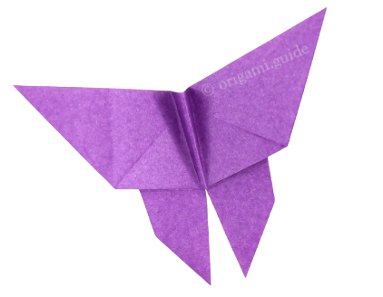
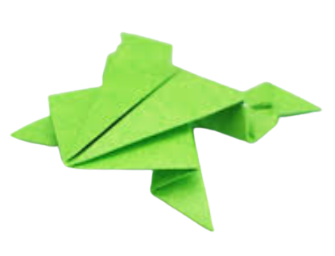
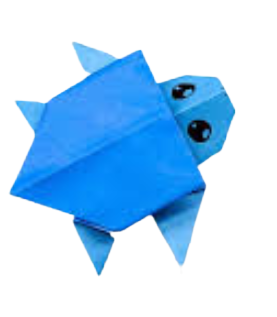

INTERESTING FACTS ABOUT PANDAüêº
- They have great camouflage for their environment
- Their eyes are different to normal bears
- They spend most of their day eating

INTERESTING FACTS ABOUT BUTTERFLYü¶ã
- Butterfly wings are transparent
- Butterflies only live for a few weeks
- Butterflies use their feet to taste

INTERESTING FACTS ABOUT FROGüê∏
- Frogs absorb water through their skin so they don't need to drink
- Frogs can lay as many as 4,000 eggs in frogspawn
- Frogs have long back legs and webbed feet for jumping and swimming

INTERESTING FACTS ABOUT TURTLEüê¢
- The largest turtles weigh more than a thousand pounds
- Turtles live all over the world
- Turtles have a second shell

INTERESTING FACTS ABOUT CICADAü¶ó
- Cicadas can survive a huge fall as babies, or nymphs
- Most have red-orange eyes
- Their short adult life is not unusual for bugs

INTERESTING FACTS ABOUT CAMELüê™
- Camels have three sets of eyelids and two rows of eyelashes to keep sand out of their eyes
- Camels have thick lips which let them forage for thorny plants other animals can't eat
- Camels can reach 7 feet in height (at the hump) and weigh up to 1500 pounds

INTERESTING FACTS ABOUT PIGEONüïä
- Pigeons are highly sociable animals
- Pigeons are incredibly complex and intelligent animals
- Pigeons are renowned for their outstanding navigational abilities

INTERESTING FACTS ABOUT CHAMELEONü¶é
- Chameleons have extremely powerful tongues
- Most chameleons eat on things you wouldn’t want to find on your dinner plate
- Chameleons have eyes in the backs of their heads

INTERESTING FACTS ABOUT TEDDY-BEARüß∏
- Teddy bears got their name from the story that Teddy Roosevelt refused to shoot a bear cub while on a hunting trip in 1902
- The first toy stuffed bear was created by German toymaker Margarete Steiff
- The official term for a teddy bear collector is an ‘arctophile’